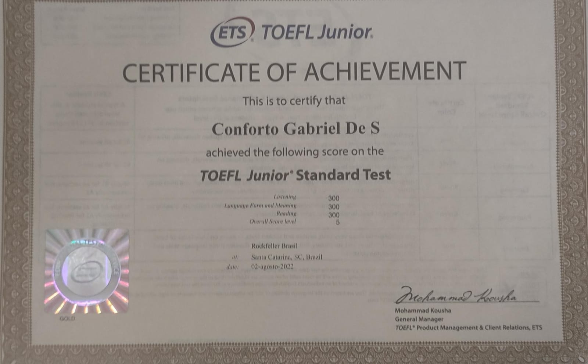

●Bolsista voluntário no projeto de pesquisa de português ”Realidade
Curricular” no IFSC Câmpus São José - Essa experiência me proporcionou
conhecimentos valiosos sobre pesquisa acadêmica e análise e organização de dados.
●Extra como caixa em Golfinho Bar e Restaurante - Desenvolvi habilidades
de atendimento ao cliente, comunicação e trabalho sobre pressão.
●Bolsista no projeto de extensão “Programa Huawei Power Generation”
no IFSC câmpus São José em associação com a Huawei - Tive a oportunidade
de trabalhar com análise e coleta de dados, preparação de slides e planilhas, comunicação efetiva e, principalmente, realizar trabalho em equipe junto de meus colegas bolsistas.
Conhecimentos sobre Redes
Meu conhecimento de redes é básico, possuo conhecimento de conceitos simples como endereçamento IP, tipos de redes, protocolos de comunicação, dispositivos de rede etc. No entanto, estou sempre buscando aprender mais sobre o assunto por meio de informações online, prática e através do meu curso técnico de telecomunicações, em que cursarei uma disciplina específica sobre redes na próxima fase. Sobre o protocolo TCP/IP, posso explicar que ele é um conjunto de medidas que estabelece regras para a comunicação entre dispositivos em uma rede, dividindo a comunicação em camadas para permitir e facilitar o envio e recebimento de dados de acordo com a situação. Tenho noção de suas camadas e alguns diferentes tipos de protocolos existentes nelas.
Conhecimentos sobre Pacote Office
Possuo conhecimentos intermediários sobre o Pacote Office, especialmente envolvendo a análise de dados, já que tive esse contato ao trabalhar no projeto de extensão Huawei Power Generation, em que tal competência era extremamente utilizada. Sou bom em criar e estruturar textos no Word, além de realizar organização e análise de dados no Excel, utilizando fórmulas, tabelas e gráficos. Também tenho experiência em criar apresentações eficazes no PowerPoint, utilizando recursos visuais para transmitir informações de forma clara, objetiva e simples.
Conhecimentos sobre HTML
Aprendi o básico de HTML em casa, através de vídeos e prática no Github com ajuda do copilot. A maior aplicação que tenho atualmente está no emprego da criação deste site, que serve tanto como demonstração quanto como aprendizado sobre a linguagem. Sou familiarizado com o sistema de marcação e a estrutura básica de um documento HTML, apesar de necessitar de poucos auxílios no emprego dela.
Fluência em Inglês
Possuo fluência em inglês, tanto na escrita quanto na fala. Tenho facilidade em compreender textos, vídeos e áudios no idioma, além de conseguir me expressar de forma clara e eficaz. Meu conhecimento do inglês é resultado de anos de estudo, prática e imersão no idioma, incluindo cursos formais, como o feito na Rockfeller Language Center, leitura de artigos e notícias, além de assistir filmes e séries e jogar jogos eletrônicos em inglês. Acredito que minha fluência em inglês é uma habilidade valiosa para o desempenho na vaga. Realizei, em 2022, um exame internacional de proficiência em inglês, o TOEFL Junior, obtendo a pontuação máxima possível, 900 pontos.
Certificações
- Certificação de proficiência em inglês TOEFL Junior - 2022 
- Certificação de curso Huawei Power Generation - 2025